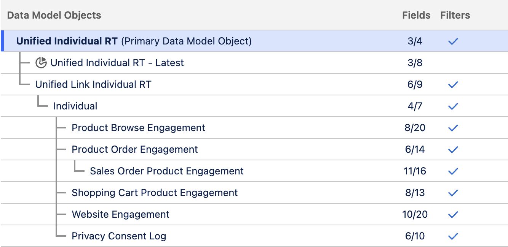
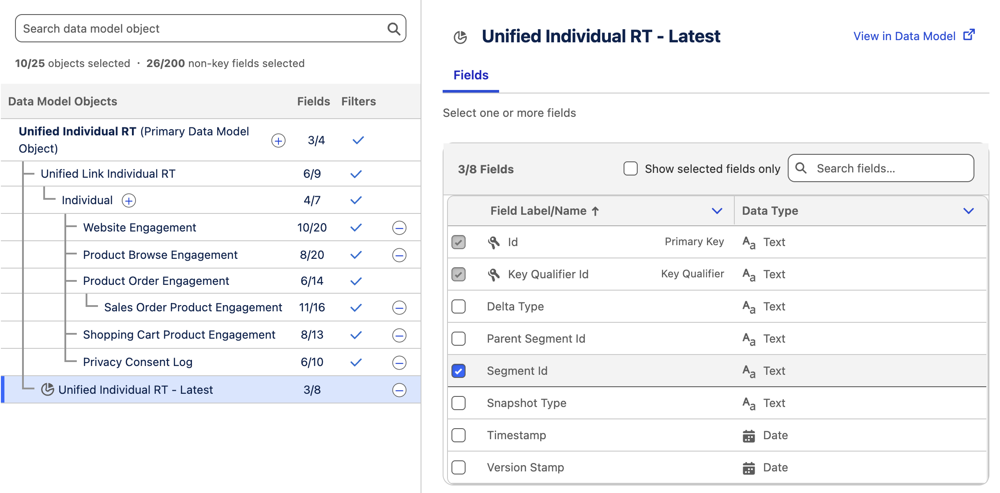

Introduction
As you created an item data graph in the previous workshop, you can now build a real-time profile data graph that returns in-the-moment profile data from website events for real-time personalization and decisioning.
Before starting the hands-on exercises in this workshop, watch the video below to learn what profile data graphs are in Data 360 and how they’re used in Salesforce Personalization.
Enter the password
LearnSPtoday
Create a Profile Data Graph
In this exercise, you will build a real-time profile data graph that updates within milliseconds and brings together real-time data from the DMOs populated by the website connector to support live personalisation and decisioning.
- Select the Data Graphs tab from the Data Cloud app.
- Click New.
- Leave the Start from Scratch tile selected, then click Next.
- Select the Real-Time Data Graph tile, then click Next.
- Enter the value in the Data Graph Name field.
Profile - Leave the default option selected in the Data Space menu.
- Select Unified Individual RT from the Primary Data Model Object menu.
Identity Resolution Ruleset Id
The 'RT' object name suffix represents a unique alphanumeric identifier used to identify the ruleset. When creating a new ruleset, you can leave this identifier blank, however you added in the Identity Resolution workshop to help avoid conflicts with the ruleset created in the Marketing Cloud Setup workshop.
- Click Next.
- Keep the default settings selected in Real-Time Consumption Limits and click Next.
- In the Unified Indvidual RT Fields list, select the following fields:
- First Name
- Last Name
- In the Data Model Objects tree, click the
icon next to Unified Individual RT (Primary Data Model Object). - Add the fields and DMOs listed in the table below.
| Parent DMO | DMO | Fields | Object Purpose |
|---|---|---|---|
| Unified Link Individual RT | Unified Individual RT |
| Represents an identity link table that connects many individual object records into one unified individual profile. |
| Unified Link Individual RT | Individual |
| Represents an individual (person) record in the data model. |
| Individual | Website Engagement |
| Captures general website engagement events collected via the configured website connector. This object typically includes interactions such as page views and other activity that are not tied to specific items or products. |
| Individual | Product Browse Engagement |
| Tracks individual engagement with products, including product views that signal purchase intent. Using a separate engagement object per item type (such as products or articles) makes it easier to configure calculated insights and targeting rules based on interaction behavior. This object will later be used to create an engagement signal that supports both ML recommender training and attribution modeling. |
| Individual | Product Order Engagement |
| Captures purchase-level engagement records, including the transaction event and total purchase amount. This object does not include product-level line item details; those are stored in the related Product Order Product Engagement child object. Including this object in the data graph allows access to its child object and the associated line item information. |
| Product Order Engagement | Sales Order Product Engagement |
| Captures the individual line items associated with each purchase transaction, providing detailed insight into what was actually bought. This object will be referenced when creating engagement signals to support machine-learning model training and attribution modeling. |
| Individual | Shopping Cart Engagement |
| Tracks cart-level interactions such as add, remove, view, and reset events. Item-level details for these interactions are stored in the related Shopping Cart Product Engagement DMO. Using both objects together allows the cart state to be derived more accurately from the sequence of recorded interactions. |
| Individual | Shopping Cart Product Engagement |
| Stores product-level details for shopping cart interactions, identifying which items were added, removed, or cleared from the cart. Used together with the Shopping Cart Engagement DMO, this object enables accurate tracking of cart contents based on recorded interaction events. |
| Individual | Privacy Consent Log |
| Tracks the consent status of a website visitor or individual, recording their preferences for data collection and user tracking on the website. |
- Confirm the data graph structure and field count matches the screenshot below.

- Click Save and Build.
Add Segment Membership DMO
If you have created a segment using the root object of your profile data graph, you can optionally add the corresponding segment membership DMO to the data graph structure. This enables you to configure targeting rules based on Data 360 segment membership at run time.
Look for the object with the pie chart
